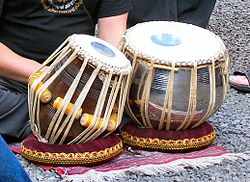
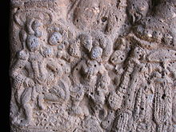

The tabla is a membranophone percussion instrument (similar to bongos) which
is often used in Hindustani classical music and in the traditional music of
India, Pakistan, Nepal, Bangladesh, and Sri Lanka. It is also one of the main
Qawali instrument used in Pakistan and India. The instrument consists of a pair
of hand drums of contrasting sizes and timbres.
The main drum is called a tabla or dayan and is played with the dominant hand.
Its shell is cylindrical and made out of wood, and its tight skin produces a
distinct pitch when struck. The larger, low pitched drum, called bayan, has a
bowl-shaped metal shell. Its membrane is looser than that of the tabla, enabling
the player to manipulate the drum's pitch with his or her hand in performance.
It is claimed that the term tabla is derived from an Arabic word, tabl, which
simply means "drum".
The tabla (ketipung bagus) is used in some other Asian
musical traditions outside of the Indian subcontinent, such as in the Indonesian
dangdut genre. The playing technique is complex and involves extensive use of
the fingers and palms in various configurations to create a wide variety of
different sounds and rhythms, reflected in mnemonic syllables (bol). The heel of
the hand is used to apply pressure or in a sliding motion on the larger drum so
that the pitch is changed during the sound's decay. In playing the Hindustani
style tabla there are two ways to play it: band bol and khula bol. In the sense
of classical music it is termed "tali" and "khali".

History:
The credit of the invention of Tabla goes to Turkish Sufi poet and musician Amir
Khusro in the 13th century, originating from the need to have a drum that could
be played from the top in the sitting position to enable the more complex rhythm
structures that were required for the new Indian Sufi vocal style of chanting
and Zikr.
Its invention would also have complemented the complex early sitar
melodies that Amir Khusro was composing.
Taals has developed since the Vedic or Upanishad eras in India As a result,
Pushkar was in existence long before even the Mridang. It is quite likely that
an instrument resembling the tabla was in existence much earlier. It was popular
during the Yadava rule (1210 to 1247) in the south, at the time when Sangita
Ratnakara was written by Sarangadeva.
A temple known as Eklingaji in Jaipur,
Rajasthan shows the carvings of a tabla being played. There is recent
iconography of the tabla dating back to 1799. This theory is now obsolete with
iconography carvings found in Bhaje caves providing solid proof that the tabla
was used in ancient India.
There are Hindu temple carvings of double hand drums
resembling the tabla that date back to 500 BCE.The tabla was spread widely
across ancient India. A Hoysaleshwara temple in Karnatak shows a carving of a
woman playing a tabla in a dance performance.
The tabla uses a "complex finger tip and hand percussive" technique played from
the top unlike the Pakhawaj and mridangam which mainly use the full palm, and
are sideways in motion and are more limited in terms of sound complexity.
Rebecca Stewart has suggested that the tabla was most likely a product of
experiments with existing drums such as the pakhawaj, mridang, dholak and
naqqara.
The origins of tabla repertoire and technique may be found in all
three, and in physical structure there are also similar elements: the smaller
pakhawaj head for the dayan, the naqqara kettledrum for the bayan, and the
flexible use of the bass of the dholak

Gharanas:
The word Gharana means "family". In relation to music, Gharana refers to a
family of musicians, a school of music or a musical lineage connected with the
name of a particular person or place.
The characteristic feature of a Gharana is
its special style of presentation, the result of the special and extraordinary
creativity and innovation of a highly talented musician. The other musicians of
the Gharana may have their own individual features of presentation, but their
training and conditioning in the distinguishing style of the Gharana is bound to
leave indelible and recognisable stamps on the presentation of the performer.
In this sense, Gharana are discernible for quite a long time, although some may
have been distinct. Again, there are some Gharana that are "hybrid", i.e., they
show mixed styles taken from other Gharana.
The emergence of the Gharana system
in our music and its growing importance in the 18th and 19th centuries had its
own impact upon the evolution of Raga.
A Gharana may take the name of (a) a person, family or group or (b) a place or
region. Examples of the first category are Seni Gharana, Imdadkhani Gharana,
Kavval Gharana and so on. Example of the second category are Gwalior Gharana.
Agra Gharana and so on. In this context, it should be noted that there is a
saying that to be able to call a school / tradition a Gharana there must have
been at least three generations of established teacher - disciple pedagogic
relationships already gone before.
Thus, for example, a musician cannot merely
migrate from India and settle in, say, Fiji and start a school with a band of
students (no matter how serious, motivated and dedicated they all be) and then
call his school the Fiji Gharana. Unless the teacher has produced students
(Generation A) of acceptably high calibre who have proven themselves in the
presence of knowledgeable (qualified) listeners, and the Generation A students
have produced similarly acceptable and proven students (Generation B)
themselves, and further the Generation B students in their turn have produced
similar and proven students (Generation C), there cannot be a Fiji Gharana in
this example.
Each Gharana has its own special Silsila or style or logic of presentation,
within the general framework of the regional Bani (or, for instrumental music,
Baj) which applied to it. Thus, the rise of the Gharana system resulted in the
segmentation of the different styles of Raga development.
This sometimes led to
different versions of the same Raga, specially when comparisons arose between
the presentations of musicians of different Gharana presenting the same Raga.
This has had a spin-off to the present day. For example, Gwalior Gharana
musicians use Shuddha Ni in addition to Komal Ni in Raga Rageshvari but
musicians of several other Gharana use only Komal Ni and not Shuddha Ni.
Another interesting phenomenon in this context is that before the rise of the
Gharana system, different regions had different Raga. That is to say, musicians
of western India would normally sing or play Raga that were different from those
of, say, northern, central or eastern India. But after the rise of the various
Gharana, this compartmentalisation became diluted, for several reasons:-
A musician of a particular Gharana may be invited to a court situated far away
for performance or even service. In that case, it would be natural that he is
influenced by the Raga in vogue in that place, just as the "native" or "local"
musicians of that place would be influenced by the new (to them) Raga that the
Gharana musician brought with him. Often, certain Raga and / or Bandish or
compositions would be considered the "property" of a particular Gharana. That
is, the Raga in question would be known only to the musicians of that Gharana
and to none else.
This would be especially true if the Raga was created in the
Gharana. It was the custom to sometimes "gift" some of these Raga / Bandish as
dowry to a son-in-law. In this way, Many Raga found their way into Gharana where
the Raga had not been in existence before. If the recipient or new "owner" of
the Raga was a musician of another Gharana, he would naturally be guided by his
own background conditioning in presenting this received Raga; this would quite
conceivably cause some variation in it that might remain or even become
heightened with the passage of time.
Another common custom was for the princes and noblemen, and also for the new
breed of rich men on the post-Moghul period (18th and 19th centuries) to hold
Sabha or musical soirees where musicians of different Gharana would present
their music. This would lead to an interchange of ideas where musicians would be
influenced by the presentations of those of other Gharana. Thus the Gharana
system served to "dilute" the previous "insularity" of Raga music. The result
was that musicians of one Gharana began to present Raga of another Gharana in
their own conditioned styles.
For example, if a musician trained in the Gaurhar
Bani style, where there was a good deal of Vilambit or slow tempo development
with plenty of long drawn, took up a Raga like, say, Bahar, in which there was
no Vilambit, he would by his own background pedagogic conditioning have a strong
tendency to present Bahar in his own style, that is, he would incorporate plenty
of Vilambit passages into the Raga and perhaps compose his own Vilambit Bandish
in the Raga.
Thus, the very character of the Raga would change over time. A good
example of this phenomenon is the well known Vilambit composition "Nabi ke
Durbar" in the Raga Basant, which was not a slow Raga to start with.
Raga:
in the 16th century new Raga, often with older names, emerged. It was possible
for two Raga of divergent sentiments or characteristics to have the same name.
Previously, a Raga may have had minor variants in such a way that the basic
character or sentiment of the Raga remained intact.
For example, Pandit Ahobal
reports in his monumental work Sangit Parijata (16th century) that the Raga
Bhairavi had two forms, one with R and the other with R. The manner of
application of both R and R were, however, the same. Thus the basic nature of
Bhairavi - the main sentiment that it conveyed - remained the same in either
case, as all the other notes, their Kaku, their Sangati etc. were the same in
either form. The "mood" of Bhairavi, therefore, remained constant. Indeed, as
long as this was maintained, such minor variations in the presentation of a Raga
were acceptable.
However, in the Gharana system, two Raga bearing the same name could have
completely different features, and hence completely dissimilar moods. Thus for
example, in the case of the Raga Shree, it is seen that a type of Shree called
Poorvi Shree, similar to the modern Shree, was in vogue. This is reported in
Hrdayanarayana's Hrdayakautuka (17th century).
The original Shree, which had G,
D and N, became more or less obsolete in north India although in south India, it
continued to be (and still is) in existence. By and by, this new Raga Poorvi
Shree was abbreviated to Shree and became the Shri of modern times. The original
Shri is to be seen in north India in the Raga Bageshri (also called Bageshvari),
in altered form. Such metamorphoses were the result of the action of the Gharana
system. In like manner, some Gharana used D in Raga like Lalit and Poorvi
whereas some other Gharana used D instead. The net result of all this was that
the system of Raga became quite confusing, since it lost a good deal of the
standardisation of earlier times.